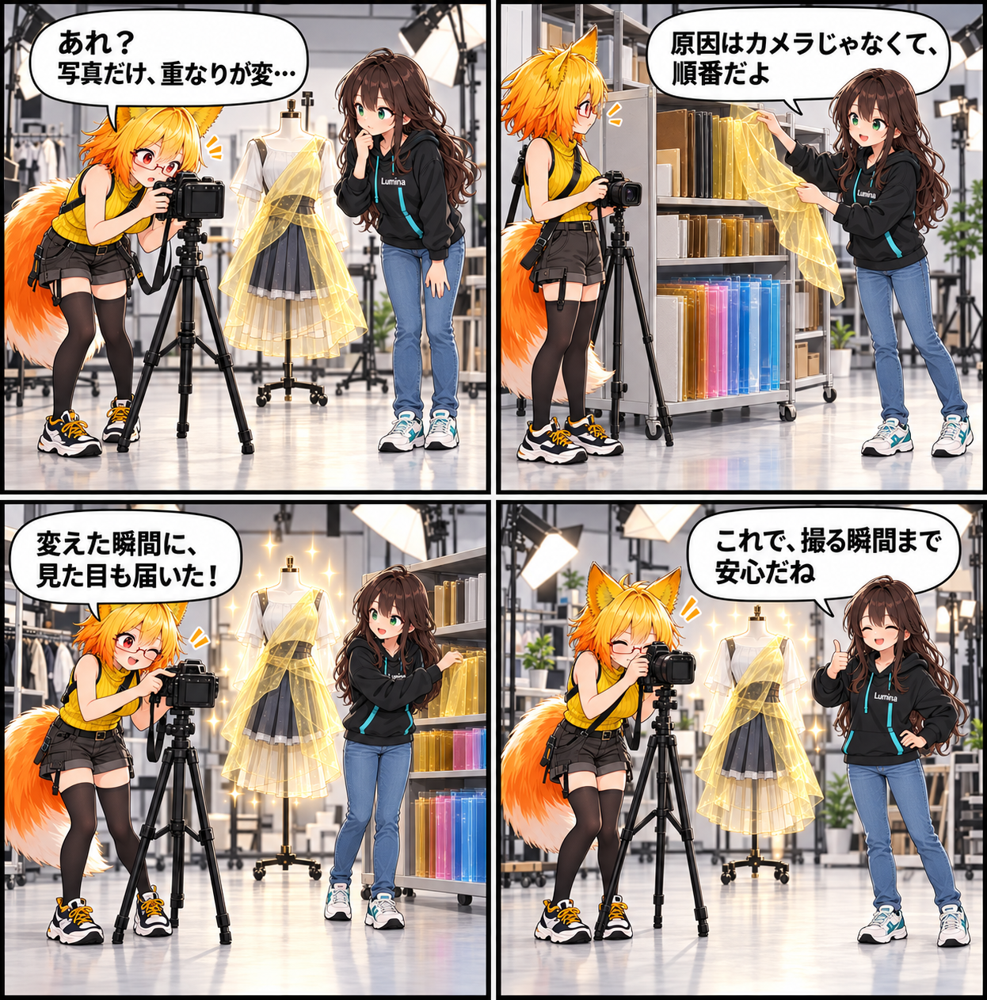

写る一枚を、待たせない日
撮影で半透明の衣装レイヤーが身体を欠いて見えることがある問題と、デスクトップの撮影エフェクトがすぐ反映されないことがある問題を修正しました。

半透明レイヤーを、正しい順番へ
PotaToonのRuntime変換では、元の描画キューが2450〜2500で、かつZWriteがOFFの半透明マテリアルを2501以降へ移すようにしました。通常の半透明より先に描く順序は保ちながら、不透明キュー扱いの深度パスがMSAAなしの写真保存で身体を隠す状態を避けます。
ZWriteがONの顔まわりのdetail、Cutout、Opaqueの契約や、購入Shader・URPのDepth Priming設定は変更していません。撮影だけで表示が崩れないよう、必要なレイヤーを正しい場所へ置く修正です。
変えた瞬間の見た目を、すぐ確認する
Desktop Viewerが撮影カメラの役割を兼ねる場合、Camera設定の操作でEnvironmentとCameraの合成状態を即時に更新するようにしました。物理撮影カメラの有無や、別の品質・環境設定の更新を待たずに、操作した撮影エフェクトを確認できます。
独立したDesktop Photo Cameraと動画Cameraにも、Cameraごとに再利用するBeautify Adapterを用意します。追加するVolumeは同期レンダリングの間だけ有効にし、Controllerの破棄時には追加したVolume・Profileを解放して、Cameraの設定を復元する設計です。
確かめるための土台
描画プロファイル互換性とBeautify URP統合のテストを追加・更新し、撮影結果とエフェクト合成の経路を検証しやすくしました。今回確認できた事実として、数値上の性能差、VR実機での結果、リリースは掲載していません。
ほかにも進んだこと
同じ集計期間には、共通LitへDepthNormals Passを加えて撮影時の欠けを修正し、撮影ガイドへの写り込みとウォームアップ照明漏れも見直しました。Beautifyのビルド用Shader Variant削減、Humanoidポーズ検証ツールとEditorでのanim保存、ライトプリセットの追加も行われています。
4コマの裏話
一見きれいに見える一枚でも、シャッターを切る瞬間だけ違和感が出ることがあります。今回は、レイヤーの並びとエフェクトの届け先を一緒に整え、「撮ったらすぐ確かめられる」小さな安心を4コマにしました。
まとめ
撮影時の半透明身体欠けを避ける描画順序と、Desktop Viewer・独立した撮影Cameraのエフェクト合成を整え、意図した見た目をすぐ確認できる撮影経路に近づけました。
本日のひとこと
撮る瞬間まで、ちゃんと見えていてほしい。